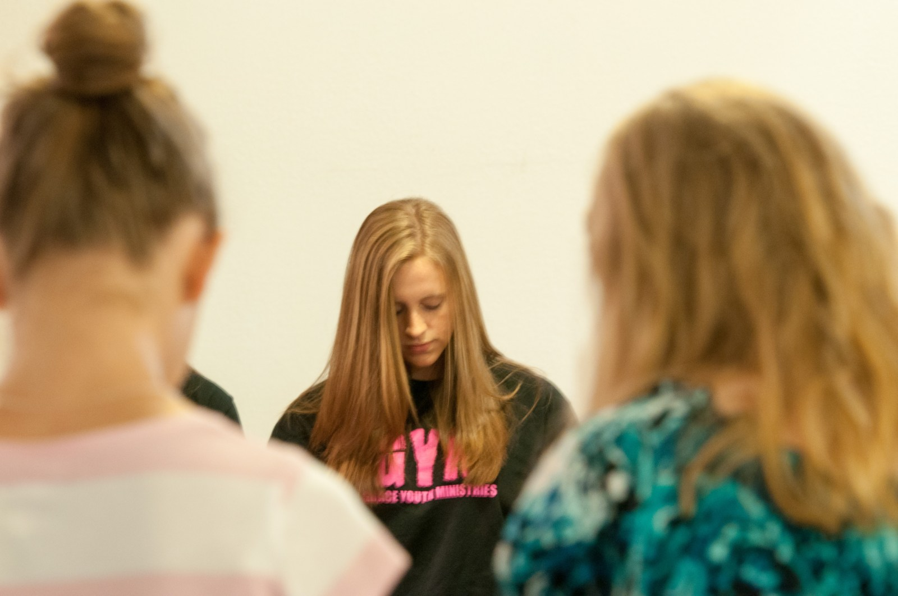

2015
The first Dare Conference
Shine · Grow · Share
- Shine
- Grow
- Share
- Where
- Emmanuel Missionary Baptist Church
- Speakers
- Eric Coleman (Grace Bible Church), Eric Cartier (Rocky Mountain Calvary), Brandon Anderson (Grace Bible Church)
- Worship
- Mario Powell
- Attendance
- 100+ students
